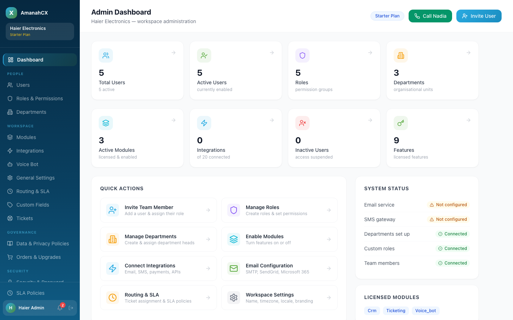
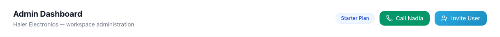
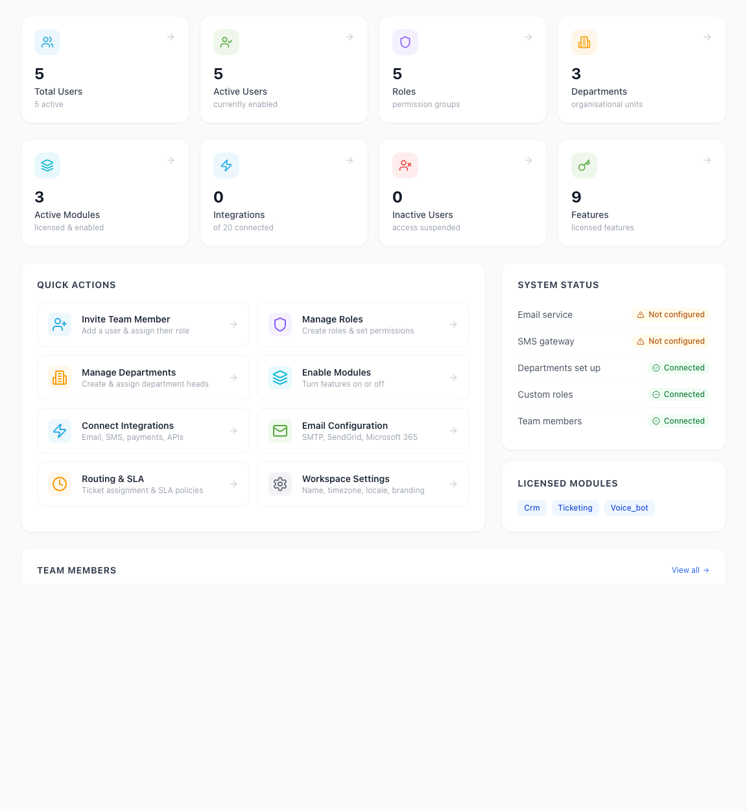

The Admin Dashboard is the first screen a Tenant Admin sees after logging in. It gives a one-glance summary of the whole workspace and quick links to every admin area.


| Item | What it does |
|---|---|
| Plan badge (e.g. "Starter Plan") | Shows which subscription plan this workspace is on — read-only here. |
| Call Nadia | Only appears if the Voice Bot module is active. Lets the admin test-call the voice bot directly from the browser. |
| Invite User | Takes the admin straight to the Users page with the invite form ready to fill in (see Getting Started). |

Every stat card is clickable and jumps straight to the relevant page:
| Card | Meaning | Clicking it goes to |
|---|---|---|
| Total Users | Every user account in the workspace, active or not | Users page |
| Active Users | Users who can currently log in | Users page |
| Roles | How many permission groups (roles) exist | Roles & Permissions page |
| Departments | How many organisational units are set up | Departments page |
| Active Modules | How many licensed features are turned on | Modules page |
| Integrations | How many of the available integrations are connected | Integrations page |
| Inactive Users | Users whose access has been suspended | Users page |
| Features | How many individual licensed features this workspace has | Modules page |
Eight shortcut buttons to the most common admin tasks — Invite Team Member, Manage Roles, Manage Departments, Enable Modules, Connect Integrations, Email Configuration, Routing & SLA, and Workspace Settings. Each is covered in its own section of this manual.
A quick health check of five things: Email service, SMS gateway, Departments set up, Custom roles, and Team members. Each shows either Connected (green) or Not configured (amber) — a fast way to see what's still missing in a new workspace.
Shows which modules this workspace is actually licensed for (e.g. CRM, Ticketing, Voice Bot). This reflects your subscription — to change it, see Orders & Upgrades.
Several Dashboard links pointed to a page that doesn't have the tabs they promised. The "Total Users", "Active Users", and "Inactive Users" stat cards, plus the "Invite Team Member" quick action, all tried to open a "Team" tab on the Settings page — but that tab doesn't exist there. Same problem for "Active Modules" / "Features" (tried to open a non-existent "Modules" tab) and "Routing & SLA" (tried a non-existent "Routing" tab). In practice this meant clicking these just landed you on the generic Settings page with no indication of what went wrong. Fixed by pointing each one to its real, working page (Users, Modules, and Routing & SLA respectively). Verified: all affected buttons now go to the correct page.